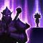

After casting a spell, Shen gets a shield. Affecting other champions reduces the cooldown of this effect.

Shen
the Eye of Twilight
Ionia
Health:
540 (+73 per level)
Energy:
400
Attack damage:
60 (+3 per level)
Attack speed:
0.625 (+2% per level)
Movement speed:
340
Health Regen:
8.5 (+0.75 per level)
Energy Regen:
50
Armor:
25 (+2.6 per level)
Magic Resist:
32.1 (+1.25 per level)
“The Eye is blind to fear, to hate, to love – to all things that would sway equilibrium.”
Leader of a secret clan of mystic warriors, Shen serves as the Eye of Twilight, entrusted to enforce equilibrium in the world. Longing to remain free from the confusion of emotion, prejudice, or ego, Shen continually struggles, spirit blade in hand, to walk the unseen path of dispassionate judgment.
Read moreAbilities


Skins

Abilities
Ki Barrier
Twilight Assault
Cost:
140/130/120/110/100 Energy
Range:
400
Shen recalls his spirit blade to attack with it, dealing damage based on the target's max health. The attacks are greatly empowered if it collides with an enemy champion, and all collided enemies are slowed while running away from Shen.
Shen recalls his spirit blade and draws it. Enemies it collides with are slowed by 35% when moving away from Shen for the next 2 seconds.Shen's next 3 attacks deal 2/2.5/3/3.5/4 (+@CharAbilityPower*.01@)% of their target's max health as bonus magic damage. If the spirit blade collided with an enemy champion, those attacks deal 4/4.5/5/5.5/6 (+@CharAbilityPower2*.01@)% instead and have +50% Attack Speed.Each attack deals 30/50/70/90/110 extra magic damage to monsters and minions (max 75/100/125/150/175).
Spirit's Refuge
Cost:
40 Energy
Range:
400
Attacks that would hit Shen or his allies near his spirit blade are blocked.
Shen's spirit blade creates a defensive zone for 1.75 seconds. Basic attacks that would hit Shen or an allied champion in the zone are blocked.If there are no champions to protect in the zone when it starts, the spirit blade will not activate until one enters or 2 seconds pass.

Shadow Dash
Cost:
180
Range:
600
Shen dashes in a direction, taunting enemies in his path.
Passive: Dealing damage with Shadow Dash or Twilight Assault recovers 0 Energy. Active: Shen dashes in a direction, dealing 50/75/100/125/150 [+0] physical damage to enemy champions and neutral monsters in his path and taunting them for 1.5 seconds.

Stand United
Cost:
No Cost
Range:
35000
Shen shields target allied champion from incoming damage, and soon after teleports to their location.
Shen grants a shield to a target allied champion that absorbs up to 250/550/850 (+135% Ability Power) damage for 5 seconds. After channeling for 0 seconds, Shen and his spirit blade teleport to the ally's location.
''The Eye is blind to fear, to hate, to love - to all things that would sway equilibrium.''
Leader of a secret clan of mystic warriors, Shen serves as the Eye of Twilight, entrusted to enforce equilibrium in the world. Longing to remain free from the confusion of emotion, prejudice, or ego, Shen continually struggles, spirit blade in hand, to walk the unseen path of dispassionate judgment.
An enigma to the shadowy realm of the spirits, as well as the mortal territories of man, Shen belongs to neither. Within him exists an uneasy fusion of human soul and arcane power. He is seen by both sides as someone to be feared. He is immovable. He is constant. He answers to nothing but his purpose.
Although his birth within the most revered of Ionian clans marked him as destined to serve, it was his iron will that made Shen the chosen leader of a shadowed order. Wielding his spirit blade – the symbol of his duty, as well his connection to the spirit realm - Shen roams both worlds, unerringly drawn to any place where one side threatens to overwhelm the other.
Leader of a secret clan of mystic warriors, Shen serves as the Eye of Twilight, entrusted to enforce equilibrium in the world. Longing to remain free from the confusion of emotion, prejudice, or ego, Shen continually struggles, spirit blade in hand, to walk the unseen path of dispassionate judgment.
An enigma to the shadowy realm of the spirits, as well as the mortal territories of man, Shen belongs to neither. Within him exists an uneasy fusion of human soul and arcane power. He is seen by both sides as someone to be feared. He is immovable. He is constant. He answers to nothing but his purpose.
Although his birth within the most revered of Ionian clans marked him as destined to serve, it was his iron will that made Shen the chosen leader of a shadowed order. Wielding his spirit blade – the symbol of his duty, as well his connection to the spirit realm - Shen roams both worlds, unerringly drawn to any place where one side threatens to overwhelm the other.
Friends
-
Kennen
-
 Akali
Akali
Rivals
-
 Zed
Zed